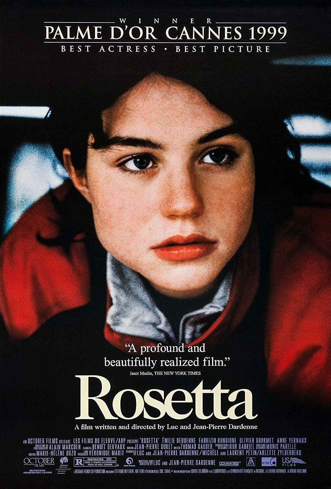

Fiche technique

- Titre
- Rosetta
- Réalisation, scénario
- Jean-Pierre Dardenne, Luc Dardenne[1]
- Photographie
- Alain Marcoen[2]
- Montage
- Marie-Hélène Dozo[2]
- Décors
- Igor Gabriel[2]
- Production
- Jean-Pierre & Luc Dardenne, Michèle et Laurent Pétin ; productrice associée Arlette Zylberberg[1]
- Interprètes principaux
- Émilie Dequenne, Fabrizio Rongione, Olivier Gourmet, Anne Yernaux[2]
- Tournage
- Seraing et Jemeppe-sur-Meuse (région liégeoise, Belgique)[1]
- Présentation
- Festival de Cannes, compétition officielle, mai 1999[2]
- Durée
- 91 minutes[2]
- Pays
- Belgique, France
- Genre
- Drame social, réalisme
- Récompenses principales
- Palme d'or (unanimité), Prix d'interprétation féminine — Cannes 1999 ; César du meilleur espoir féminin 2000[1]
Synopsis
Rosetta, dix-sept ans, vient d'être licenciée d'un emploi en usine à l'issue de sa période d'essai. Elle vit avec sa mère alcoolique dans une caravane, sur un terrain de camping en bordure d'une zone industrielle[9]. Chaque jour, elle repart en quête d'un travail, d'une place qu'elle trouve, qu'elle perd, qu'on lui reprend[3] : un poste à la baraque à gaufres tenue par un patron peu scrupuleux, où elle se lie, sans vraiment savoir comment être son amie, à un jeune collègue, Riquet.
Refusant toute forme de charité ou d'assistance, dissimulant sa pauvreté et l'état de sa mère, Rosetta n'a qu'un seul horizon : obtenir un emploi stable qui lui donnerait accès à une vie « normale », comme les autres, parmi les autres[4]. Cette obsession la conduira à un choix moral qui la définira autant qu'il la détruit.
Contexte de production
Après La Promesse (1996), remarqué à la Quinzaine des réalisateurs, les frères Dardenne construisent Rosetta non pas à partir d'une intrigue, mais d'un personnage : Luc Dardenne indique s'être inspiré de la situation du protagoniste K du Château de Kafka, sans cesse refusé à l'entrée d'un monde auquel il aspire, pour façonner une jeune femme constamment repoussée hors d'une société qu'elle cherche à intégrer[14]. Le scénario original comportait un personnage d'assistante sociale et une mère plus développée ; ces éléments furent retirés en cours de tournage pour resserrer la caméra sur l'obsession de Rosetta[6].
Le tournage a eu lieu à Seraing et Jemeppe-sur-Meuse, dans la région industrielle liégeoise où les frères Dardenne ont grandi et situent l'essentiel de leur filmographie[1][13]. Le prénom « Rosetta » apparaît pour la première fois dans le journal de bord de Luc Dardenne dès septembre 1994, en hommage à l'écrivaine italienne Rosetta Loy[1]. Fidèles à leur méthode, les réalisateurs ont fait précéder le tournage de longues répétitions physiques avec les acteurs, puis tourné dans l'ordre chronologique du scénario, en plans-séquences, sans jamais répéter deux fois la même prise à l'identique[11]. Émilie Dequenne, alors âgée de dix-sept ans, y fait ses tout premiers pas à l'écran[1].
Structure narrative
Le récit renonce à toute mécanique d'intrigue classique pour épouser le rythme du quotidien de Rosetta : une succession de démarches, de trajets, de gestes répétés, organisée non par des rebondissements mais par l'urgence physique de la survie[14]. Certaines actions reviennent plusieurs fois à l'identique — la descente dans les bois pour échanger ses bottes contre des chaussures de ville, le déplacement d'un casier à poissons servant de piège improvisé — creusant, par la répétition, le portrait d'un être organisé autour de rituels de contrôle dans une existence qui lui échappe par ailleurs[15].
Le film ne recourt jamais au champ-contrechamp classique : la caméra reste presque toujours derrière ou au plus près de Rosetta, refusant au spectateur la position de surplomb qui autoriserait la distance ou l'analyse psychologique[16]. Cette structure culmine dans une dernière ligne droite resserrée sur un dilemme moral — dénoncer Riquet pour prendre sa place — dont les conséquences ferment le récit sur un plan fixe, silencieux, sur le seul visage de Rosetta[16].
Mise en scène et procédés techniques
La « patte Dardenne » se cristallise avec Rosetta : caméra à l'épaule collée au corps de l'actrice, lumière naturelle, absence totale de musique ajoutée[10][13]. Jean-Pierre Dardenne explique avoir cherché à placer la caméra « à la mauvaise place, en retard, derrière l'épaule », pour que les personnages existent dans leur épaisseur plutôt que dans la démonstration d'une mise en scène[11]. Aucune marque au sol, aucune répétition de prise identique : le cadreur connaît sa place mais chaque plan-séquence conserve une tension de premier tournage[11].
Cette économie de moyens — sans maquillage appuyé, sans partition, sans ralenti ni emphase — construit un régime de vérité physique où l'émotion naît du geste plutôt que de l'expression[13]. La critique Carole Desbarats note que cette fiction « toute mâtinée de documentaire » n'en reste pas moins bâtie sur les rouages du mélodrame ; Luc Dardenne, conscient de ce risque, écrit dans son journal de bord vouloir empêcher le spectateur de céder aux larmes faciles sur son propre sort plutôt que sur celui de Rosetta[6].
Un même trajet, refait presque à l'identique de jour en jour — la caméra, en le filmant chaque fois avec la même intensité, en fait moins un décor qu'un rituel de survie répété comme une prière.
Personnages principaux
Rosetta
Émilie DequenneDix-sept ans, obsédée par l'idée d'un emploi stable et d'une vie « normale » ; un « petit soldat » affrontant seul la forteresse sociale[13].
Riquet
Fabrizio RongioneCollègue de la baraque à gaufres, seul lien social que Rosetta approche, sans savoir nommer ni tenir une amitié.
Le patron
Olivier GourmetEmployeur de la baraque à gaufres, figure d'un pouvoir patronal ordinaire sur des emplois précaires et interchangeables.
La mère
Anne YernauxMère alcoolique de Rosetta, source de honte autant que de responsabilité endossée malgré elle.
Thèmes
- Le travail comme seul horizon de dignité. Pour Rosetta, un emploi n'est pas un moyen de subsistance parmi d'autres mais la condition unique d'existence sociale légitime — la « vie normale » qu'elle récite comme une litanie[4].
- Solitude et incapacité au lien. Rosetta ne sait ni nommer ni habiter l'amitié que lui offre Riquet ; la scène où elle se répète seule « j'ai un ami, tu as un ami » dit l'apprentissage à vif d'un lien qu'elle n'a jamais connu[3][9].
- La trahison comme survie. Le dilemme moral final — dénoncer Riquet pour prendre son poste — refuse toute résolution édifiante : le film ne fait de Rosetta ni une héroïne de la lutte des classes, ni un symbole acceptable de sa condition[13].
- Le corps comme récit. Marches, courses, chutes, portage d'une bonbonne de gaz trop lourde : le film raconte par l'épuisement physique plutôt que par le dialogue ou l'explication[15].
- Refus du pathos. Absence de musique, de psychologisation, de contrechamp classique : une esthétique documentaire mise, selon la critique, au service d'un mélodrame qui refuse de s'assumer comme tel[6].
Réception et postérité
Présenté en compétition à Cannes en mai 1999, Rosetta reçoit la Palme d'or à l'unanimité du jury présidé par David Cronenberg — une surprise, alors que beaucoup attendaient le sacre du Tout sur ma mère de Pedro Almodóvar[1]. Émilie Dequenne reçoit, pour son tout premier rôle, le Prix d'interprétation féminine ex æquo[1]. Le film est néanmoins accueilli avec des réserves par une partie de la critique de l'époque, taxé de « misérabilisme » dans son portrait d'une jeune chômeuse[1].
L'impact du film dépasse le champ critique : la Convention de premier emploi votée par le gouvernement belge est familièrement rebaptisée « plan Rosetta » par les médias, bien que les Dardenne assurent que la coïncidence de calendrier avec la sortie du film soit fortuite[1].
« La vérité est toujours moins intéressante que la fiction. » Jean-Pierre Dardenne, The Guardian, cité par Wikipédia
Rosetta installe durablement le style Dardenne — caméra à l'épaule, unité de lieu dans la région de Seraing, refus de la musique ajoutée — comme un jalon du cinéma social européen, souvent rapproché de celui de Ken Loach, et largement cité comme référence par des cinéastes ultérieurs[2]. Le film a fait l'objet d'une restauration numérique présentée en rétrospective dans le cadre d'un programme consacré aux cinquante ans du cinéma belge[11].
Émilie Dequenne est morte d'un cancer en mars 2025 ; les frères Dardenne, qui envisageaient de retravailler avec elle, ont rendu hommage à l'actrice qui, selon leurs mots, était restée « un peu Rosetta » pour eux[12].
Conclusion
Rosetta impose une méthode plus qu'un style : une caméra qui refuse la distance, un montage qui refuse l'explication, un récit qui refuse l'absolution. En resserrant tout sur le corps et l'obsession d'une jeune femme pour qui un emploi équivaut à une existence reconnue, les frères Dardenne produisent un film aussi difficile à regarder qu'impossible à oublier — un film qui, selon leurs propres mots, ne cherche jamais à faire pleurer le spectateur sur lui-même. Trois décennies plus tard, son empreinte se lit autant dans le vocabulaire du cinéma social contemporain que dans le nom, resté dans l'usage courant en Belgique, d'une mesure de politique publique qu'il n'a pourtant fait que croiser par hasard.
Sources
- Wikipédia (FR), « Rosetta (film) » — fr.wikipedia.org
- Festival de Cannes, fiche film — festival-cannes.com/f/rosetta
- AlloCiné — allocine.fr
- Festival de Cannes, synopsis officiel — festival-cannes.com
- Wikipédia (FR), notes de production et citations critiques — fr.wikipedia.org
- IMDb — imdb.com/title/tt0200071
- Criterion Collection — criterion.com/films/28056-rosetta
- Cineuropa, entretien avec Jean-Pierre et Luc Dardenne — cineuropa.org
- SensCritique, extraits d'entretien (Numéro, mai 2025) — senscritique.com
- TroisCouleurs, « Scène culte : Rosetta des frères Dardenne » — troiscouleurs.fr
- RTBF Actus, « Rosetta : 5 choses à savoir sur ce classique belge » — rtbf.be
- Ciné-club de Caen, dossier Rosetta — cineclubdecaen.com
- Les Grignoux, dossier pédagogique Rosetta — grignoux.be
- Cairn.info, Cédric Lomba, « Représentations du social... le cinéma des frères Dardenne » — cairn.info
- Letterboxd — letterboxd.com/film/rosetta
- MUBI — mubi.com/films/rosetta
- IMP Awards, affiche officielle — impawards.com/1999/rosetta